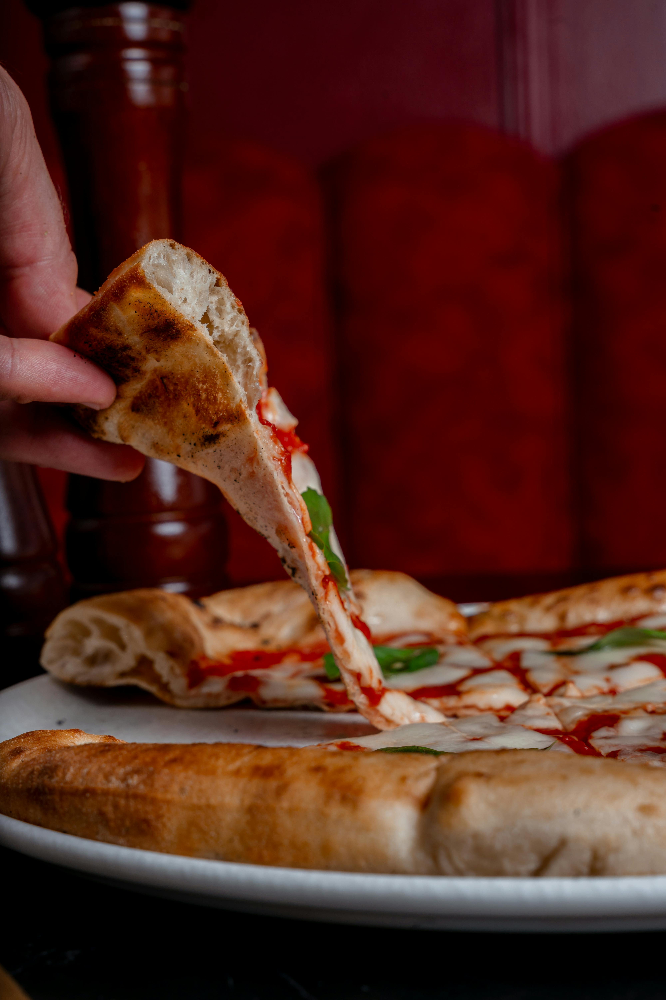
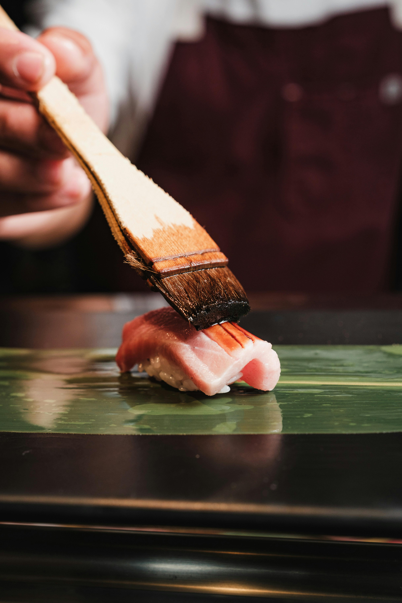
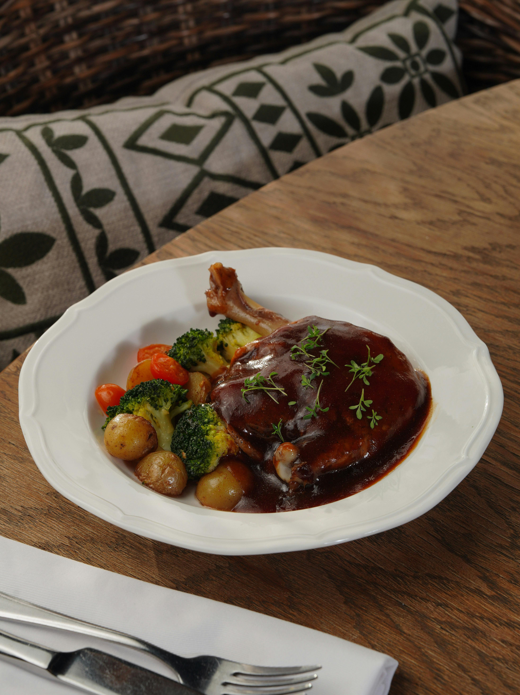
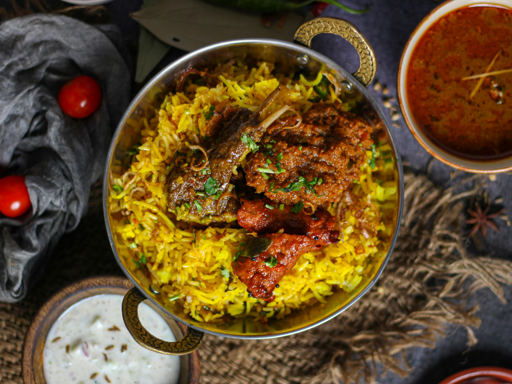
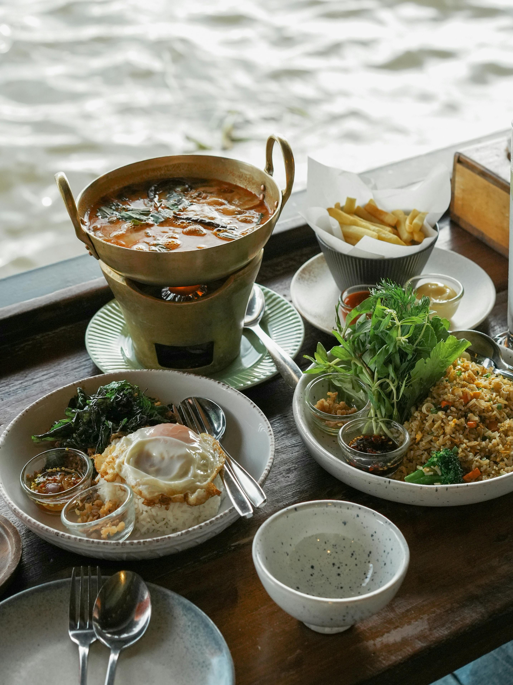
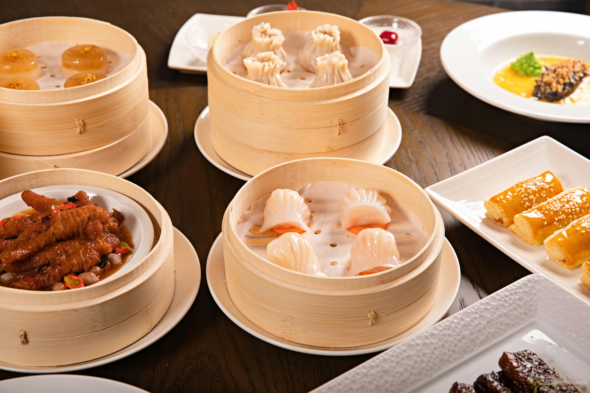

Our Restaurants

Bella Ciao
A warm Italian restaurant in the heart of Melbourne, serving authentic Neapolitan pizza and housemade pasta. The wood-fired oven has been running since opening day, and every dish comes with a story from the old country. Perfect for families and date nights alike, with a menu that caters to all ages. The cosy interior and attentive staff make every visit feel like a special occasion.
Signature Dishes
- Margherita Pizza — $22
- Tagliatelle al Ragù — $28
- Tiramisu — $14

Fuji Kasa
An intimate omakase experience inspired by the quiet elegance of Japanese dining culture. Fuji Kasa sources its fish directly from Okinawa suppliers and presents each course with pretty garnishes and a little of western touch. It's an ideal location for couples and business dinners, the restaurant seats only 30 guests to ensure an exclusive experience. Reservations are strongly recommended.
Signature Dishes
- Chef's Omakase (7 courses) — $95
- Wagyu Tataki — $42
- Matcha Panna Cotta — $16

Cava Monsieur
Cava Monsieur brings the charm of classic local French cuisines. The menu changes with the seasons, guided by what's available at the local markets each week. Regulars come back for the duck confit and the excellent natural wine list. The space is small and candlelit, making it one of Melbourne's most sought-after spots for a romantic evening or a long dinner with friends.
Signature Dishes
- Duck Confit — $38
- French Onion Soup — $18
- Crème Brûlée — $15

Br Br Biryani
Br Br Biryani is a family-run Indian restaurant in South Yarra with recipes passed down through three generations. The kitchen grinds its own spice blends daily, and the tandoor oven never cools. The menu covers everything from mild butter chicken to fiery vindaloo, with plenty of vegan and halal options. Large tables and generous portions make it the go-to choice for group dinners and family gatherings.
Signature Dishes
- Butter Chicken — $24
- Lamb Biryani — $26
- Garlic Naan (3 pcs) — $8

Kinsa
A contemporary twist on Bangkok’s vibrant street food scene, right in the heart of Melbourne. Kinsa blends industrial design elements with authentic, fiery flavors, creating an energetic space perfect for late-night noodles, signature cocktails, and casual group gatherings.
Signature Dishes
- Yellow Curry — $24
- Pad Thai — $18
- Crispy Pork & Chinese Brocolli — $23

Beijing City
Beijing City has been a Chinatown institution for over 20 years, known for its trolley-style yum cha on weekends and a la carte Cantonese menu throughout the week. The dining room is large and lively, with a buzz that feels authentically. Vegetarian and vegan dim sum options are available alongside the classics.
Signature Dishes
- Har Gow (4 pcs) — $12
- Peking Duck (half) — $48
- Egg Tarts (3 pcs) — $9